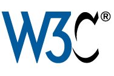

Get connected with the greatest minds in the industry with the latest Internet development, news, various development platform techniques, hints and tips. World Wide Web Consortium (W3C), Microsoft, Angry Birds, Facebook, Yahoo!, Mozilla, and more are coming all together with motivating and inspirational talks and workshops. Hundreds of developers will gather at the summit to meet, learn and exchange experiences and ideas on different development platform / environment.
The main theme of the event is HTML5 and it will be divided into two parts: conference and workshops. The workshops will provide a two way communication platform for developers to obtain hands-on experience in small groups to learn new technique, share experience and exchange ideas.
World Internet Developers' Summit
Date: 6 - 7 March 2012
Venue: 6 March at Cyberport, 7 March at Hong Kong Science Park
So don’t miss out and keep yourself in the loop with our latest development and news. register now to join the rest of developers in Hong Kong and its surrounding region for one of the most exciting and engaging event yet. Official registration will soon be launched, please register now to get the most up-to-date information about the event.
Keynote Speakers

Philippe Le Hegaret
Interaction Domain Leader, W3C.
Why HTML5?
Philippe Le Hegaret heads the W3C Interaction Domain, which produces
frontend Web technologies including HTML5, CSS3, SVG, WOFF, or Web
APIs.
Until July 2008, Philippe lead the W3C Architecture Domain,
which produced the W3C Core technologies in the area of XML, Web
Services, and Internationalization. He is a former Chair of the
Document Object Model (DOM) Working Group.

Giorgio Sardo
Sr. Evangelism Manager, Microsoft Corporation.
Behind the scenes of Cut The Rope in HTML5
Giorgio Sardo is a Sr. Evangelism Manager at Microsoft Corp, focused on Windows 8. Winner of the Imagine Cup worldwide championship, nominated as Best Consultant of the Year from the British Computer Society, Giorgio moved in early 2009 to the Microsoft headquarters in Redmond to focus on the future of the Web. Giorgio is a popular speaker worldwide and in the last 5 years he has presented at hundreds of conferences around the globe. He is the mind behind many beautiful HTML5 applications and games at www.beautyoftheweb.com.
Prizes
By simply attending the conference you will have the chance of winning a variety of exciting prizes including:

Visual Studio Professional 2010 (Valued at HKD 6,233)
Xbox 360 4GB Console with Kinect (Valued at HKD 2,499)
Office Home and Student 2010 (Valued at HKD 1,204)
Linksys E3200 Router (Valued at HKD 1,246)
Keynote: Why HTML5?
World Wide Web Consortium (W3C)
Philippe Le Hegaret
Interaction Domain Leader, W3C.
Philippe Le Hegaret heads the W3C Interaction Domain, which produces
frontend Web technologies including HTML5, CSS3, SVG, WOFF, or Web
APIs.
Until July 2008, Philippe lead the W3C Architecture Domain,
which produced the W3C Core technologies in the area of XML, Web
Services, and Internationalization. He is a former Chair of the
Document Object Model (DOM) Working Group.
Keynote: Behind the scenes of Cut The Rope in HTML5
Presentation: Building HTML5 Metro style apps on Windows 8
Microsoft
Giorgio Sardo
Sr. Evangelism Manager, Microsoft Corporation.
Giorgio Sardo is a Sr. Evangelism Manager at Microsoft Corp, focused on Windows 8. Winner of the Imagine Cup worldwide championship, nominated as Best Consultant of the Year from the British Computer Society, Giorgio moved in early 2009 to the Microsoft headquarters in Redmond to focus on the future of the Web. Giorgio is a popular speaker worldwide and in the last 5 years he has presented at hundreds of conferences around the globe. He is the mind behind many beautiful HTML5 applications and games at www.beautyoftheweb.com.
Presentation: PhoneGap - 12 things you should know
Adobe

Mark Dong
Adobe Developer evangelist.
Flex, JavaScript and Java developer with much experience on enterprise RIA architect and project manager in FSI and Energy industry. Mark is also the author of 《The road of Flex master》. You can contact Mark by Weibo and his website
Mark will introduce PhoneGap from the beginning to the secrets behind the phoneGap. The long story of PhoneGap is condensed into 12 things and you will learn what it is, what it is not, how to develop and debug a phoneGap App, how to develop a phoneGap plugin, the nature of PhoneGap and more.
Presentation: Bringing the web into mobile apps
Facebook
David Lim
Partner Engineer, Facebook.
David has been in the mobile industry since 1999 when he first joined a mobile startup company in China called YesMobile as a lead developer. He then co-founded and took the role of Director of Engineering in a company called SenseStream Limited in Hong Kong, which was a mobile application development powerhouse serving carriers all over APAC, and this company was later acquired by Adamind (LSE:ADA) in 2006. David joined Research In Motion in 2008 as Technical Partnership Manager in the Alliances & Developer Relations department. In 2011, David joined Facebook as a Mobile Partner Engineer in the Developer Relations team, APAC. He has a B.Eng. in Information Engineering from The Chinese University of Hong Kong, and a Master of Finance from The University of Hong Kong. David is now based in Hong Kong, China
Presentation: Apps on HTML5 - Why, how, and beyond
In this talk, Tim Chien from Mozilla Taiwan will given an overview on 2 things: 1) why it is important to bring you applications to the Web, and 2) the HTML5 technologies that can be leveraged to bring the so-called "native" experience to the web apps. We will have further discussion on the application ecosystem of the web, and the Mozilla's role within to continuing nurturing the web.
Workshop: Take your Web App Offline
Making your web application available even when the user is offline is a big step toward an app from simply an website. In this workshop, we will be covering several HTML5 APIs that enables you to do so. Among them, we will have step-by-step guidance on the Offline AppCache, which is at the moment tricky to set up.
Audience is expected to understand HTML authoring and basic JavaScript with event handling; bring your own work for "the upgrade" is strongly recommended.
Mozilla
Tim Chien
Software Engineer, Mozilla.
Tim Chien (a.k.a. timdream) is an advocate of open web technology and a
professional front-end web developer. However majored in physics in
college, he has been building things on the web before high school. With a
decade of experiences in HTML, JavaScript, and CSS, Tim is interested in
adopting the latest technology to develop user-friendly experience.
Particularly concerned with user experience and interaction design, Tim
understands how to formulate the visual conversion with people through
screens. Here's a portfolio with highlights of his works, publication and
talks: http://timdream.org/
Tim has been an active community member in Mozilla for years. He recently
joined Mozilla Taiwan for the Boot to Gecko (B2G) project, which is a
mobile platform project bringing Web Applications to a new stage.
Presentation: Angry Birds on Facebook
Rovio
Henri Holm
Senior Vice President Rovio Asia
Rovio is an industry-changing entertainment media company based in Finland, and the creator of the globally successful Angry Birds franchise. Angry Birds, a casual puzzle game for touchscreen smartphones, became an international phenomenon within a year of release, and is now the number one paid app of all time. Following this success in mobile gaming, Angry Birds has expanded rapidly in entertainment, publishing, and licensing to become a beloved international brand. In this session, Henri Holm, Senior Vice President Rovio Asia, along with the audience, explored Rovio's next story - Angry Birds on Facebook!.
Presentation: Build your web apps with YUI and YQL
Yahoo!
Marcus Chan
Director of Engineering, Asia Products.
Marcus has worked in different areas in the software industry – database, middleware, enterprise applications, and now end-user facing web apps at Yahoo!. During his 6 years at Yahoo!, Marcus has worked in Yahoo! Small Business, Yahoo! Search, and has recently joined the exciting APAC group working on E-commerce – auction, shopping, store, where all of them are market leaders in the region.
Workshop: Hands-on YUI
This workshop has 2 hands-on sessions. First session provides participants a quick start on YUI. Second session allows participants to learn about more advanced YUI techniques, including using YQL in YUI. Through the exercise, participatns will learn about YQL as well.
Participants should bring their own laptops, and have basic web development skills (basic html, css, and javascript).
Chien-Hung Chen
Front End Engineer, Yahoo!
Works in Yahoo! for 9 years in Taiwan, touched many Yahoo! Taiwan
products including front page, news, music, blog, maps, lifestyle, etc.
Knows many Yahoo! technology and front end develop topics.
Web for All
Office of the Government Chief Information Officer, the Government of HKSAR
Ms. Elke Mak
Manager of Digital Inclusion Division, OGCIO
The Digital Inclusion Division is actively supporting the development of Hong Kong as an inclusive, knowledge-based society, one of the five key action areas in the 2008 Digital 21 Strategy, and bringing the benefit of ICT to disadvantaged groups of the community to enhance their quality of life and strengthen their capacity in engaging with the development of information society. The Division is responsible for developing and implementing relevant strategies and initiatives to address the digital divide issues of different underprivileged groups. Ms Mak is currently in charge of the Web Accessibility Campaign in promoting and encouraging the wider adoption of accessibility design in both public and private websites to facilitate access to online information and services by persons with disabilities.
Workshop: How to build a multiplay HTML5 game
Internet Society Hong Kong
Thomas Mak
42games
Thomas has written two books, Flash Multiplayer Virtual World and HTML5 Games Development by Example: Beginner's Guide. He believes the games should let player shares joyful time with friends. Therefore his favorite game type is multiplayer casual games.
The workshop will cover creating a multiplayer game example by using Web Sockets API and Node.js as backend server. The example will discuss message passing with socket.io between clients and a Node.js based game server.
Participants is recommended to have some experience on web and JavaScript development. Come with a computer with node.js environment setup and html/javascript editing tool, and Safari or Chrome installed.
Summit Panel: What will the Internet be like in 5 years?
Internet Society Hong Kong

Moderator: Charles Mok
Founding Chair, Internet Society Hong Kong.
Charles is the Founding Chairman and current Executive Committee
Member of Internet Society Hong Kong (ISOC-HK), Honorary
President of the Hong Kong Information Technology Federation
(HKITF) and Vice Chairman of the Digital Information and Telecommunications Committee of the Hong Kong General Chamber of Commerce. He is also the Chairman of The Professional Commons, the first cross-sector professional think tank focusing on issues of public interest in Hong Kong. He was also a past chairman and a co-founder of the Hong Kong Internet Service Providers Association (HKISPA), and a founding member of the organizing committee of Creative Commons Hong Kong, and former chairman of the Health Information Technology Special Interest Division of the Hong Kong Computer Society.
Date: 6 - 7 March, 2012 (Tue - Wed)
Venue:
6 Mar - Cyberport (Ocean View Court, The Arcade, Cyberport 3, 100 Cyberport Road, HK) (map)
7 Mar - Hong Kong Science Park (Charles K Kao Auditorium - between Lakeside 1 & 2, Phase 2, Hong Kong Science Park, Shatin, HK) (map)
| 6 March |
Cyberport |
| 09:30 - 10:00 |
Registration |
| 10:00 - 10:30 |
Welcome and Greetings
Guest of Honour
Mr. Daniel Lai, Government Chief Information Officer, Hong Kong SAR Government
Officiating Guests
Mr. SC Leung, Chairman, Internet Society Hong Kong
Mr. Herman Lam, CEO, Hong Kong Cyberport Management Co Ltd
Mr. Anthony Tan, CEO, Hong Kong Science and Technology Parks Corporation
|
| 10:30 - 11:15 |
Philippe Le Hegaret, Interaction Domain Leader, World Wide Web Consortium (W3C)
Keynote: Why HTML5? |
| 11:15 - 12:00 |
David Lim, Partner Engineer, Facebook
Bringing the web into mobile apps |
| 12:00 - 12:45 |
Henri Holm, Senior Vice President, Rovio Asia
Angry Birds on Facebook |
| 12.45 – 14:00 |
Lunch |
| 14:00 – 14:45 |
Giorgio Sardo, Sr. Evangelism Manager, Microsoft
Keynote: Behind the scenes of Cut The Rope in HTML5 |
| 14:45 – 15:30 |
Marcus Chan, Director of Engineering, Asia Products, Yahoo!
Build your web apps with YUI and YQL |
| 15:30 – 15:50 |
Break |
| 15:50 - 16:20 |
Mark Dong, Adobe evangelist, Adobe
Phonegap – 12 things you should know |
| 16:20 – 17:00 |
Summit Panel Discussion: What will the Internet be like in 5 years?
Moderator: Charles Mok, Founding Chairman, Internet Society Hong Kong
Panelists:
Philippe Le Hegaret, Interaction Domain Leader, World Wide Web Consortium (W3C)
Giorgio Sardo, Sr. Evangelism Manager, Microsoft
David Lim, Partner Engineer, Facebook
Marcus Chan, Director of Engineering, Asia Products, Yahoo!
Tim Chien, Software Engineer, Mozilla
|
| 17:00 - 17:15 |
Lucky Draw |
| 7 Mar |
Hong Kong Science Park |
| 09:30 – 10:00 |
Registration |
| 10:00 – 10:30 |
Welcome and Greetings
Mr. Charles Mok, Founding Chairman, Internet Society Hong Kong
Mr. Anthony Tan, CEO, Hong Kong Science and Technology Parks Corporation
Mr. David Chung, CTO, Hong Kong Cyberport
|
| 10:30 - 11:15 |
Tim Chien, Software Engineer, Mozilla.
Apps on HTML5 – Why, how, and beyond |
| 11:15 - 12:00 |
Elke Mak, Manager of Digital Inclusion Division, Office of the Government Chief Information Officer, The Government of HKSAR
Web for All |
| 12:00 - 12:45 |
Giorgio Sardo, Sr. Evangelism Manager, Microsoft
Building HTML5 Metro style application in Win 8 |
| 12:45 – 12:50 |
Lucky Draw |
| 12.50 – 14:00 |
Lunch |
14:00 – 17:00
(2-3 hrs) |
Concurrent workshops
- Yahoo! – Hands-on YUI
- Mozilla – Take your Web App Offline
- ISOC HK – How to build a multiplay HTML5 game
|
| Note: The workshops will hold in parallel session on 7 Mar at Hong Kong Science Park. (max: 50 people for each workshop) |
Sorry the event is full and we have stopped accepting new registration